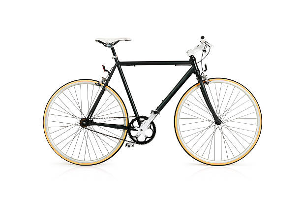
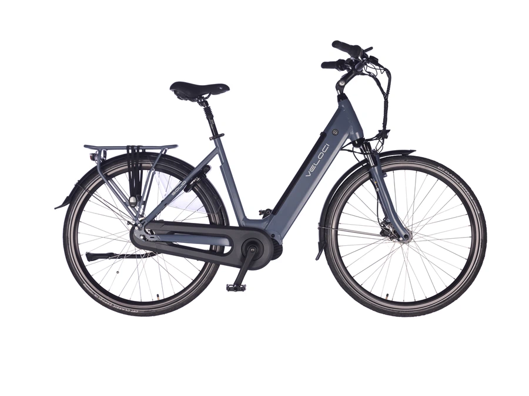
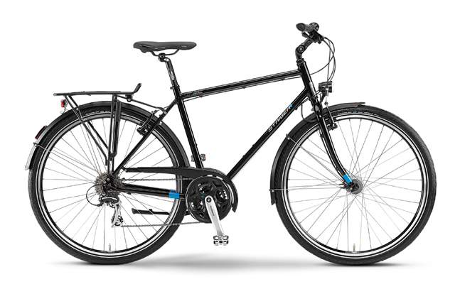
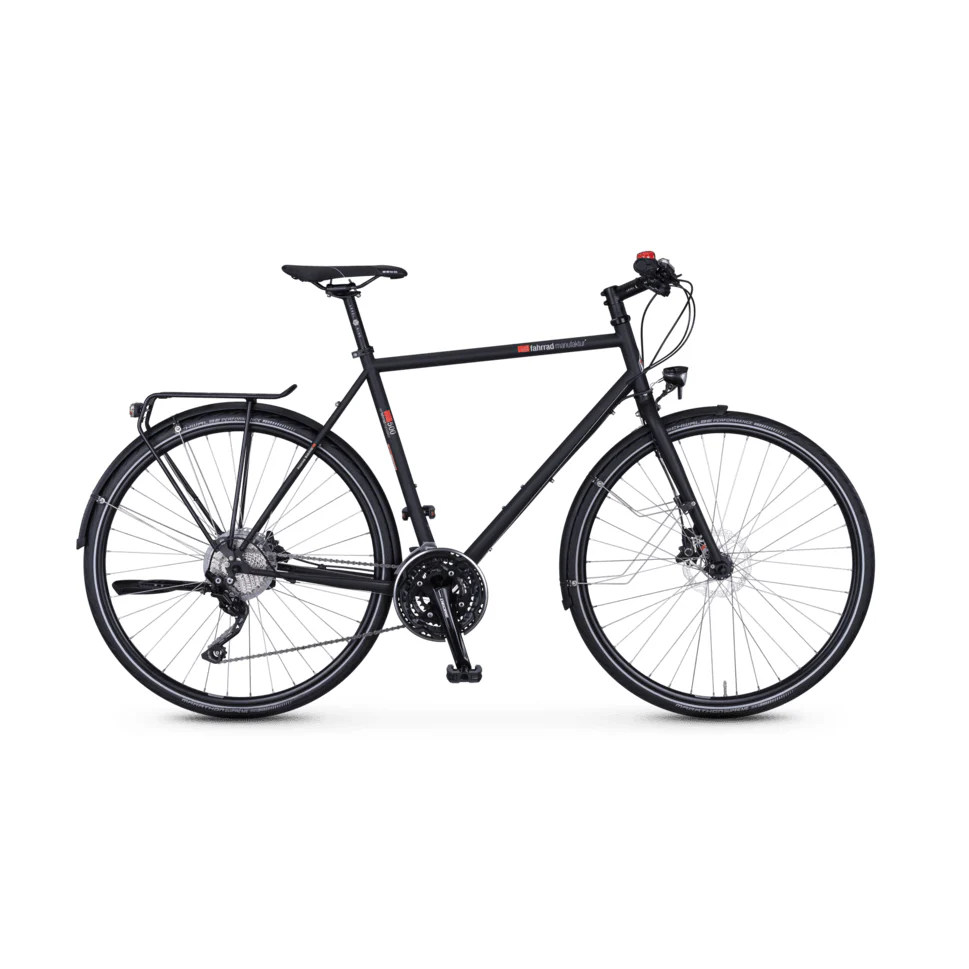

Deze stoere stadsfiets is perfect voor dagelijks gebruik. Met zijn stevige frame en comfortabele
zadel, is het de ideale keuze voor korte ritten door de stad of lange tochten in het weekend.

Deze elegante rode fiets is ideaal voor het maken van avontuurlijke ritten door de natuur. Met brede
banden en een sterk frame biedt deze fiets optimale stabiliteit en comfort, zelfs op ruwe paden.

De Flying Pigeon is een klassieke en betrouwbare fiets, perfect voor stadsverkeer. Met zijn iconische
ontwerp en robuuste structuur is het de ideale keuze voor diegenen die stijl en functionaliteit
willen combineren.

Deze moderne elektrische fiets is de perfecte keuze voor lange afstanden zonder inspanning. De
krachtige motor en het gestroomlijnde ontwerp maken elke rit soepel en snel.

Deze sportieve racefiets is gemaakt voor snelheid. Met zijn lichtgewicht frame en aerodynamische
ontwerp, is hij ideaal voor fietsliefhebbers die graag lange afstanden afleggen op verharde wegen.
Welkom bij FluitendeFietser! 🚲🎶
We zijn zo blij dat je hier bent! Bij FluitendeFietser draait alles om plezier, avontuur
en de vrijheid die de fiets je biedt. Of je nu een doorgewinterde fietser bent of gewoon op zoek bent
naar een nieuwe manier om van A naar B te komen, wij hebben alles wat je nodig hebt om de beste
fietservaring te maken.
Verken onze geweldige producten, ontdek handige tips en laat je inspireren door de mooie momenten die je
kunt beleven op twee wielen. Wij heten je van harte welkom in onze fietsgemeenschap – samen maken we de
wereld een stukje mooier en een stukje groener!
Fiets je met ons mee? 🚴♂️💨